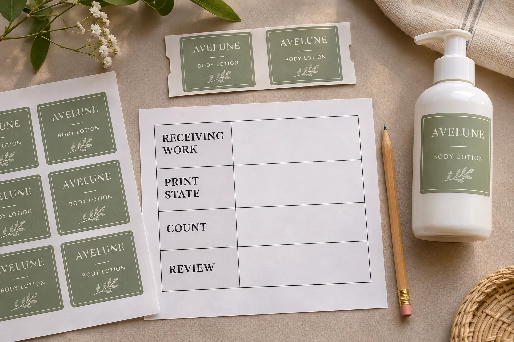

Choose around the receiving operation
Use sheets when the actual hand-labeling or sample workflow can handle them and the required designs can be supplied in a suitable layout. Use rolls when the operator's dispenser or applicator needs a continuous web, or when an evaluated hand process works better from a roll. Order quantity alone does not choose the format. Confirm who receives the labels and whether that person needs printed labels ready to apply or stock for later printing.
A small order can still need machine-compatible rolls. A large collection of changing sample designs can still need a different arrangement. The relevant comparison ends with usable, correctly identified labels at the receiving operation, rather than with a convenient number of sheets or rolls.
Separate supplying labels from printing them later
A sheet of finished, printed cosmetic labels and a blank sheet for an office printer are different purchases. The same distinction applies to rolls. State which content must already be printed and which, if any, will be added later. A roll intended for one printing technology is not established as suitable for another by its shape.
In a public cosmetic-business sample-label discussion, the author described printing on sheets and clarified that individual labels were needed quickly for samples. That self-report explains why a recommendation based only on total volume can miss the task. It does not establish the author's current business, a general market preference or the technical cause of the black-print concern discussed in that thread. Other commenters' printer settings are not a specification for your job.
If later printing is required, identify the exact printer, printing method, accepted media and remaining blank area. Ask its operator to check the proposed construction. OnlineLabels' sheet-label guidance distinguishes printer-specific stock and advises against repeatedly feeding its label sheets through a laser printer. Do not build a one-at-a-time plan around repeatedly reusing a sheet without checking the actual media and equipment instructions. That guidance concerns its products; it is not a YT printer-compatibility promise.
Compare the hand and machine tasks
For hand application, have the person doing the work try the proposed carrier on the intended bottle or jar. Can they hold it, start the peel and keep the correct design identified? Compare the complete handling task, including storing partly used supplies and moving between designs. A roll does not require an automatic line: Avery's custom-roll description includes both machine and hand application. Its offer is an example, not YT's pricing, material or minimum order policy.
For machine application, ask the receiving operator for a written roll specification and the review needed before release. The roll and unwind checklist covers core, outside diameter, web arrangement and illustrated orientation. A number called standard is not an operator's acceptance. Use the line-trial guide when the proposed combination needs a representative machine check.
Keep the finished label outline separate from the carrier format. A custom-shaped label may arrive on a sheet, a roll or another agreed unit. The label and backing boundary guide handles that drawing. This page chooses the supplied format, rather than specifying cutting settings or approving adhesive performance.
Use one format acceptance brief
Give each proposed route the same requirement. Record unknowns as open questions rather than filling them with the printer's default.
| Input | What to record | Decision or hold |
|---|---|---|
| Receiving work | Named hand operator, dispenser or applicator; actual container and next operation. | Which supplied format does that operation accept? |
| Print state | Finished artwork, later variable content, printer/media requirements if relevant. | Are labels ready to apply, or is a supported printing step still required? |
| Design and count | Labels per design/component, proposed sheet layout or roll arrangement, supplied-unit count. | Can the receiver identify the designs and reconcile usable labels without confusing units? |
| Representative review | Actual construction/carrier sample, operator response and remaining approval conditions. | Is the proposed supply accepted for this task, or what must be resolved first? |

- Describe the receiving work and the state in which the labels must arrive.
- Ask each supplier to describe its proposed sheet layout or roll arrangement against that work.
- Have the operator review a representative supply, including any later printing step.
- Record the accepted format, design quantities and unresolved conditions with the order.
The output is an acknowledged supplied-format requirement. Hold the affected order when no operator accepts the proposed format, when the quote's units cannot be reconciled or when later-printing compatibility is only assumed.
Keep sample and production requirements distinct
In a hypothetical small lotion presentation project, finished labels on sheets may suit a person applying a few changing designs by hand. Confirm the layout, quantities and handling rather than assuming that every sheet contains the same design. If individual content keeps changing, clarify whether the proposal supplies finished versions or a separately supported later-printing route.
For a hypothetical repeat filling run, the same visible artwork may need rolls that the co-packer has accepted. A hand-applied sheet sample can help review appearance while leaving that production requirement open. It should not silently become the approved delivery format for a machine order.
Neither example supplies a universal quantity at which rolls become cheaper or necessary. Ask for current proposals with quantity by design, construction, sample scope and delivery format. The small-order guide addresses minimums and launch stages; the quote-unit guide helps reconcile prices. They do not replace the operator's format response.
Prepare the supplied-format question
For cosmetic bottle and jar labels, send the container, dimensions, artwork and labels needed per design. State who will apply them, whether further printing is required and which sheet or roll details are still open. Ask for the proposed format and representative review scope. The form prepares a message; send drawings, machine requirements and sample photographs by email or WhatsApp.
Prepare a label format inquiry